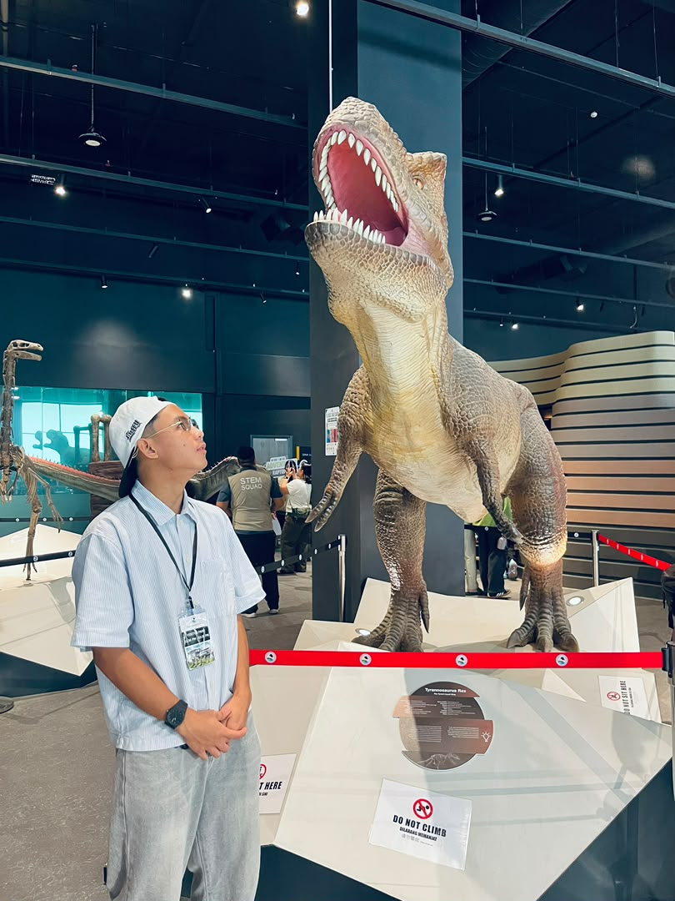

Background
his academic journey has shaped his interest in information management, records, documentation and digital organisation. he enjoy learning how systems, processes and ideas connect in a practical way.
A LITTLE ABOUT HIM
Introducing Haffriq Elliya bin Abdullah, an Information Management student at UiTM Kota Samarahan. he is someone who enjoys learning through experience, willing to explore new things contributing through responsibility and open to learning from every experience.

he's character
his academic journey has shaped his interest in information management, records, documentation and digital organisation. he enjoy learning how systems, processes and ideas connect in a practical way.
he value patience, effort and consistency. he like to approach challenges with focus and keep improving through practice, feedback and self-discipline.
his strengths include leadership, communication, teamwork, adaptability and problem solving. he developed these through school leadership, sports and university involvement.
he interested in technology, digital work and personal development. he want to keep growing in web development, information-related work and opportunities where he can contribute meaningfully.